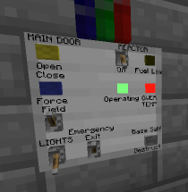
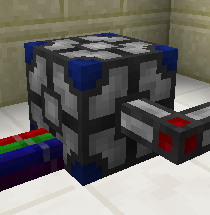

| Control Panels | Bundled Cable to RedNet Adaptor |
|  |  |
| Minecraft Version | Project Blue |
Documentation |
Project
Red |
Forge |
| 1.7.10 |
ProjectBlue-MODVER-mc1.7.10.jar | ProjectBlue-MODVER-Doc.zip | 4.5.1 |
10.13.0 |
ProjectBlue-MODVER-MCVER-Source.zip
greg.ewing@canterbury.ac.nz
Previous versions can be found here: